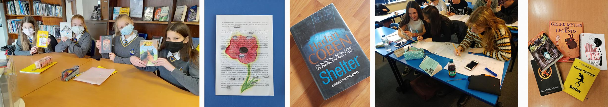

English

The English Department at WHS has an excellent record of examination success at GCSE and A Level which is a testament to the high quality teaching and learning that takes place throughout the key stages. We are committed to sharing our passion for the subject, providing a stimulating, dynamic and academically rigorous experience of English for all our students.
Pupils follow the National Curriculum at KS3 and sit two separate GCSEs:
In the Sixth Form students are able to study either:
Furthermore, the English department offers:
Stimulating creativity and thought beyond the curriculum is an important focus for the English Department. We encourage students to enter local rotary debate competitions as well partaking in creative writing or poetry competitions. We value the achievement and participation of all our students.
In addition, the department provides GCSE and GCE revision sessions in the run up to external examinations.
If you require further information on the English department, please contact Mrs K Price, Departmental Leader.
KS3 Twitter Account

GCSE Twitter Account
KS5 Twitter Account